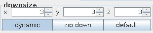
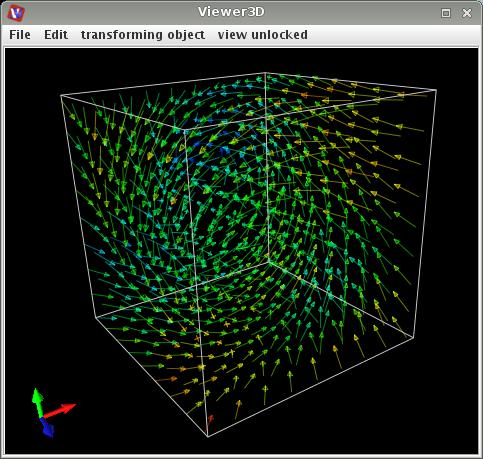

|
|
|
visualizes selected component by small glyphs at selected nodes (balls or diamonds for scalars, arrows for vectors)
| input port | type | description | data acceptors |
|---|---|---|---|
| inField | VNField | Regular Field Irregular Field |
|
| threshold | Float | ||
| output port | type | description | data schemas |
| outObj | VNGeometryObject |
GLYPHS
The glyphs module places a geometrical object at each node of an input field. Glyphs can be sized and colored according to the selected data component. There are different kinds of glyphs for scalars and vectors.
Input data
The input field is regular or irregular. Optionally there is an input floating point number.
Output data
A 3D geometry object of a field.
Presentation parameters
Part of the parameters are common for most modules and are discussed in the common interfaces section unter the Presentation Panel entry.

The glyph size component drop down list defines the component of the input field which is used to scale the glyphs. By default the first component in the list is used.
There are different glyph geometries in the glyph drop down list. For scalar values these are sphere, raindrop, snowflake, box, diamond. For vector values these are arrow, arrow3D, cone, tube, circle, simple arrow, symmetric segment, segment.
The glyph smoothness slider adjusts the smoothness of glyphs.

In case of regular fields the user can adjust downsize factors using the downsize input text fields. Downsize reduces the size of the field, saving processing time and memory by "thinning out" the data. Default downsize values depend on the dimensions of the input field and are chosen automatically.
If dynamic button is on output is generated every time the downsize parameter changes. No down button cancels downsize. Default button adjusts the default values for downsize.
In the case of irregular fields the user adjusts the downsize factor using the downsize slider.

By default, the scale of the glyphs is defined by the absolute value of the data. The user can also choose square root scale or constant size glyphs.
The glyph scale slider allows to scale the glyph size for square root scale or absolute value. If check box on the right hand side is on the user can change minimum, maximum and current value typing the values into the text fields.
Example

Choose test regular field 3D module from test objects library and glyphs module from general mappers and accessories library and connect them.
In the glyphs module GUI choose for glyph size component vortex, and for glyph arrow, downsize x, y and z by an appropriate value, choose constant size glyphs and an appropriate value for glyph scale.
